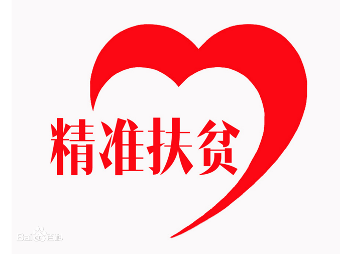
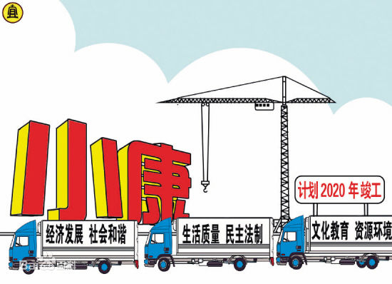
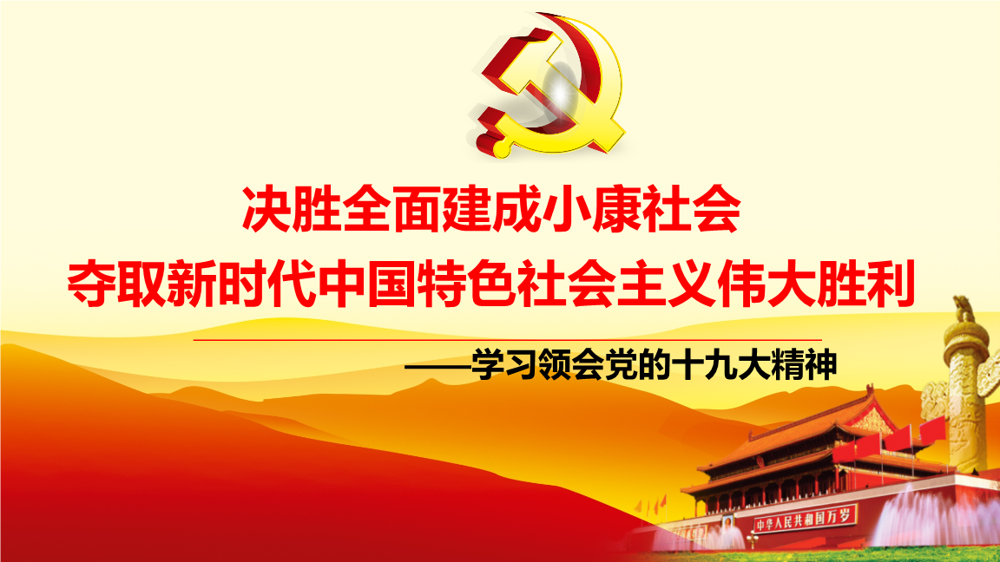

精准扶贫
精准扶贫：是粗放扶贫的对称，是指针对不同贫困区域环境、不同贫困农户状况，运用科学有效程序对扶贫对象实施精确识别、精确帮扶、精确管理的治贫方式。一般来说，精准扶贫主要是就贫困居民而言的，谁贫困就扶持谁。
“精准扶贫”的重要思想最早是在2013年11月，习近平到湖南湘西考察时首次作出了 “ 实事求是、因地制宜、分类指导、精准扶贫 ” 的重要指示。 2014年1月，中办详细规制了精准扶贫工作模式的顶层设计，推动了“精准扶贫”思想落地。2014年3月，习近平参加两会代表团审议时强调，要实施精准扶贫，瞄准扶贫对象，进行重点施策。进一步阐释了精准扶贫理念 。

2015年1月，习近平总书记新年首个调研地点选择了云南，总书记强调坚决打好扶贫开发攻坚战，加快民族地区经济社会发展。5个月后，总书记来到与云南毗邻的贵州省，强调要科学谋划好“十三五”时期扶贫开发工作，确保贫困人口到2020年如期脱贫，并提出扶贫开发“贵在精准，重在精准，成败之举在于精准”，“精准扶贫” 成为各界热议的关键词。 2015年10月16日，习近平在2015减贫与发展高层论坛上强调，中国扶贫攻坚工作实施精准扶贫方略，增加扶贫投入，出台优惠政策措施，坚持中国制度优势，注重六个精准，坚持分类施策，因人因地施策，因贫困原因施策，因贫困类型施策，通过扶持生产和就业发展一批，通过易地搬迁安置一批，通过生态保护脱贫一批，通过教育扶贫脱贫一批，通过低保政策兜底一批，广泛动员全社会力量参与扶贫。
全面建设小康社会
全面建设小康社会是党和国家到2020年的奋斗目标。
“小康社会”是由邓小平在20世纪70年代末80年代初在规划中国经济社会发展蓝图时提出的战略构想。1979年12月6日，邓小平在会见日本首相大平正芳时使用“小康”来描述中国式的现代化。他说：“我们要实现四个现代化，是中国式的现代化。我们的四个现代化的概念，不是像你们那样的现代化的概念，而是‘小康之家’。到本世纪末，中国的四个现代化即使达到了某种目标，我们的国民生产总值人均水平也还是很低的。要达到第三世界中比较富裕一点的国家的水平，比如国民生产总值人均一千美元，也还得付出很大的努力。中国到那时也还是一个小康的状态。” 1984年，他又进一步补充说：“所谓小康，就是到本世纪末，国民生产总值人均800美元。”。随着中国特色社会主义建设事业的深入，其内涵和意义不断地得到丰富和发展。

2002年11月8日至14日，中国共产党第十六次全国代表大会在北京召开。大会审议和通过了江泽民代表第十五届中央委员会所作的《全面建设小康社会,开创中国特色社会主义事业新局面》的报告。
根据全面开创中国特色社会主义事业新局面的要求，在深刻分析党和国家面临的新形势新任务的基础上，大会确定了全面建设小康社会的奋斗目标。指出:我们要在本世纪头20年,集中力量，全面建设惠及十几亿人口的更高水平的小康社会,使经济更加发展、民主更加健全、科教更加进步、文化更加繁荣、社会更加和谐、人民生活更加殷实。这是实现现代化建设第三步战略目标必经的承上启下的发展阶段，也是完善社会主义市场经济体制和扩大对外开放的关键阶段。经过这个阶段的建设，再继续奋斗几十年,到本世纪中叶基本实现现代化，把我国建设成富强、民主、文明的社会主义国家。
中共十八届五中全会发表的公报说，“十二五”时期中国经济实力、科技实力、国防实力、国际影响力又上了一个大台阶。数据显示，“十二五”期间，中国综合国力稳居全球第一阵营，并成为全球第二个经济总量跨越“10万亿美元”门槛的经济体。
公报重申了全面建成小康社会新的目标要求，包括经济保持中高速增长，到2020年国内生产总值和城乡居民人均收入比2010年翻一番，人民生活水平和质量普遍提高，现行标准下农村贫困人口实现脱贫，生态环境质量总体改善等。
全面建成小康社会
2017年10月18日，习近平指出，我们既要全面建成小康社会、实现第一个百年奋斗目标，又要乘势而上开启全面建设社会主义现代化国家新征程，向第二个百年奋斗目标进军。
习近平说，从现在到二〇二〇年，是全面建成小康社会决胜期。要按照十六大、十七大、十八大提出的全面建成小康社会各项要求，紧扣我国社会主要矛盾变化，统筹推进经济建设、政治建设、文化建设、社会建设、生态文明建设，坚定实施科教兴国战略、人才强国战略、创新驱动发展战略、乡村振兴战略、区域协调发展战略、可持续发展战略、军民融合发展战略，突出抓重点、补短板、强弱项，特别是要坚决打好防范化解重大风险、精准脱贫、污染防治的攻坚战，使全面建成小康社会得到人民认可、经得起历史检验。
从十九大到二十大，是“两个一百年”奋斗目标的历史交汇期。我们既要全面建成小康社会、实现第一个百年奋斗目标，又要乘势而上开启全面建设社会主义现代化国家新征程，向第二个百年奋斗目标进军。
习近平提出，综合分析国际国内形势和我国发展条件，从二〇二〇年到本世纪中叶可以分两个阶段来安排。

第一个阶段，从二〇二〇年到二〇三五年，在全面建成小康社会的基础上，再奋斗十五年，基本实现社会主义现代化。到那时，我国经济实力、科技实力将大幅跃升，跻身创新型国家前列；人民平等参与、平等发展权利得到充分保障，法治国家、法治政府、法治社会基本建成，各方面制度更加完善，国家治理体系和治理能力现代化基本实现；社会文明程度达到新的高度，国家文化软实力显著增强，中华文化影响更加广泛深入；人民生活更为宽裕，中等收入群体比例明显提高，城乡区域发展差距和居民生活水平差距显著缩小，基本公共服务均等化基本实现，全体人民共同富裕迈出坚实步伐；现代社会治理格局基本形成，社会充满活力又和谐有序；生态环境根本好转，美丽中国目标基本实现。
第二个阶段，从二〇三五年到本世纪中叶，在基本实现现代化的基础上，再奋斗十五年，把我国建成富强民主文明和谐美丽的社会主义现代化强国。到那时，我国物质文明、政治文明、精神文明、社会文明、生态文明将全面提升，实现国家治理体系和治理能力现代化，成为综合国力和国际影响力领先的国家，全体人民共同富裕基本实现，我国人民将享有更加幸福安康的生活，中华民族将以更加昂扬的姿态屹立于世界民族之林。
习近平强调，从全面建成小康社会到基本实现现代化，再到全面建成社会主义现代化强国，是新时代中国特色社会主义发展的战略安排。我们要坚忍不拔、锲而不舍，奋力谱写社会主义现代化新征程的壮丽篇章。
中国精准扶贫成就瞩目 为全球减贫积累经验
来源:中国网
中国扶贫攻坚的主要做法一是构建财政专项扶贫资金管理机制。逐步完善国家扶贫资金投放结构，中央财政、扶贫信贷和以工代赈等扶贫资金集中帮扶国家重点贫困县，有关省（自治区、直辖市）政府和各中央部门有相应配套资金，并将集中连片特困地区作为资金投放和项目覆盖的首要目标，实施集中连片整村推进。其他零星贫困乡村和农户由地方政府扶贫资金扶持。
二是构建多主体、多渠道的参与机制。各级政府和部门参与定点扶贫任务，结合干部培养和锻炼选派干部蹲点扶贫，直接帮扶到乡到村。政府积极实施“东西帮扶”协作，结合西部大开发，东部地区对口帮扶西部各省、区，促进区域协调发展，缩小东部与中西部的发展差距。同时，我国还建立了多渠道参与的社会扶贫机制，通过“希望工程”、“光彩事业”等动员社会多方力量参与扶贫工作。
三是推动贫困地区社会事业全面发展。在教育扶贫方面，重视贫困地区教育投入、智力投资，实行农科教结合，增强贫困户掌握先进实用技术能力；在医疗扶贫方面，积极发展合作医疗，逐步建立农村基本医疗保障制度，健全贫困地区县、乡、村多层级医疗服务体系，严防因病致贫、因病返贫；在社会保障扶贫方面，逐步建立了城乡特殊困难群众社会救助体系，逐步健全了农村养老保险、农村“五保户”生活保障等制度。
四是强化组织领导，确保扶贫工作落到实处。各级政府均成立了专门的扶贫工作领导小组，明确主体责任，建立了党政一把手扶贫工作责任制。通过加强农村基层党组织建设，保证扶贫攻坚措施精准落实到贫困村、贫困户；通过加强扶贫人员队伍建设，强化各级扶贫机构及其职责，提高扶贫开发水平；通过加强扶贫开发统计监测和扶贫资金审计，提高扶贫的精准性和资金使用效率。
中国扶贫攻坚的突出成就经过37年来的努力，中国7亿多农村贫困人口实现脱贫，为全面小康打下了基础。中国是世界上减贫人口最多的国家，也是率先实现联合国千年发展目标的国家。中国的扶贫工作取得了举世瞩目的成就，谱写了人类反贫困历史上的辉煌篇章。
一是农村贫困人口大幅减少，贫困发生率明显下降。按照现行标准计算，十二五期间，我国农村贫困人口由1.22亿人减少到5575万人，7000多万贫困人口实现脱贫。据国家统计局发布的《2015年国民经济和社会发展统计公报》数据，我国农村贫困发生率从2000年的10.2%下降到2015年的5.7%。
二是贫困地区农民生活水平显著提高。国家扶贫开发工作重点县的农民收入水平明显提高，实现了跨越式增长。尤其是2002年到2007年，国家扶贫开发工作重点县的农民人均纯收入增幅连续5年高于全国农民人均纯收入7.5%的平均增幅。随着贫困地区农民收入水平的调高，人均消费支出也呈现了加快增长的势头。
三是贫困地区基础设施条件明显改善。2000年，国家扶贫开发工作重点县通公路、通电、通电话、能接收电视节目的行政村的比例分别为92.6%、96.5%、78.3%和96.0%，到2015年，上述比例均提高到98.5%以上，基础设施条件明显改善。
四是贫困地区社会事业得到较快发展。贫困地区基础教育水平明显提高，文盲、半文盲率持续下降，劳动力素质明显提升。贫困地区医疗卫生条件得到巨大改善、服务能力不断增强，基本实现“小病不出村、大病不出县”。贫困地区社会保障投入力度不断加大，社会保障制度不断完善，社会保障水平不断提高。
中国扶贫攻坚的基本经验中国是世界上最大的发展中国家，一直是世界减贫事业的积极倡导者和有力推动者。改革开放以来，中国积极探索实践，走出了一条中国特色减贫道路。为全球减贫事业作出了重大贡献，为世界减贫事业积累了宝贵经验。
一是坚持改革开放，保持经济快速增长，不断出台有利于贫困地区和贫困人口发展的政策，为大规模减贫奠定了基础和条件。
二是坚持政府主导，把扶贫开发纳入国家总体发展战略，开展大规模专项扶贫行动，针对特定人群组织实施妇女儿童、残疾人、少数民族发展规划。
三是坚持开发式扶贫方针，把发展作为解决贫困的根本途径，既扶贫又扶志，调动扶贫对象的积极性，提高其发展能力，发挥其主体作用。
四是坚持动员全社会参与，发挥中国制度优势，构建了政府、社会、市场协同推进的大扶贫格局，形成了跨地区、跨部门、跨单位、全社会共同参与的多元主体的社会扶贫体系。
五是坚持普惠政策和特惠政策相结合，在加大对农村、农业、农民普惠政策支持的基础上，对贫困人口实施特惠政策，做到应扶尽扶、应保尽保。
习近平：到2020年是全面建成小康社会决胜期
来源:新浪
习近平指出，既要决胜全面建成小康社会，又要开启全面建设社会主义现代化国家新征程
新华社北京10月18日电 习近平指出，我们既要全面建成小康社会、实现第一个百年奋斗目标，又要乘势而上开启全面建设社会主义现代化国家新征程，向第二个百年奋斗目标进军。
习近平说，从现在到二〇二〇年，是全面建成小康社会决胜期。要按照十六大、十七大、十八大提出的全面建成小康社会各项要求，紧扣我国社会主要矛盾变化，统筹推进经济建设、政治建设、文化建设、社会建设、生态文明建设，坚定实施科教兴国战略、人才强国战略、创新驱动发展战略、乡村振兴战略、区域协调发展战略、可持续发展战略、军民融合发展战略，突出抓重点、补短板、强弱项，特别是要坚决打好防范化解重大风险、精准脱贫、污染防治的攻坚战，使全面建成小康社会得到人民认可、经得起历史检验。
从十九大到二十大，是“两个一百年”奋斗目标的历史交汇期。我们既要全面建成小康社会、实现第一个百年奋斗目标，又要乘势而上开启全面建设社会主义现代化国家新征程，向第二个百年奋斗目标进军。
习近平提出，综合分析国际国内形势和我国发展条件，从二〇二〇年到本世纪中叶可以分两个阶段来安排。
第一个阶段，从二〇二〇年到二〇三五年，在全面建成小康社会的基础上，再奋斗十五年，基本实现社会主义现代化。到那时，我国经济实力、科技实力将大幅跃升，跻身创新型国家前列；人民平等参与、平等发展权利得到充分保障，法治国家、法治政府、法治社会基本建成，各方面制度更加完善，国家治理体系和治理能力现代化基本实现；社会文明程度达到新的高度，国家文化软实力显著增强，中华文化影响更加广泛深入；人民生活更为宽裕，中等收入群体比例明显提高，城乡区域发展差距和居民生活水平差距显著缩小，基本公共服务均等化基本实现，全体人民共同富裕迈出坚实步伐；现代社会治理格局基本形成，社会充满活力又和谐有序；生态环境根本好转，美丽中国目标基本实现。
第二个阶段，从二〇三五年到本世纪中叶，在基本实现现代化的基础上，再奋斗十五年，把我国建成富强民主文明和谐美丽的社会主义现代化强国。到那时，我国物质文明、政治文明、精神文明、社会文明、生态文明将全面提升，实现国家治理体系和治理能力现代化，成为综合国力和国际影响力领先的国家，全体人民共同富裕基本实现，我国人民将享有更加幸福安康的生活，中华民族将以更加昂扬的姿态屹立于世界民族之林。
习近平强调，从全面建成小康社会到基本实现现代化，再到全面建成社会主义现代化强国，是新时代中国特色社会主义发展的战略安排。我们要坚忍不拔、锲而不舍，奋力谱写社会主义现代化新征程的壮丽篇章。